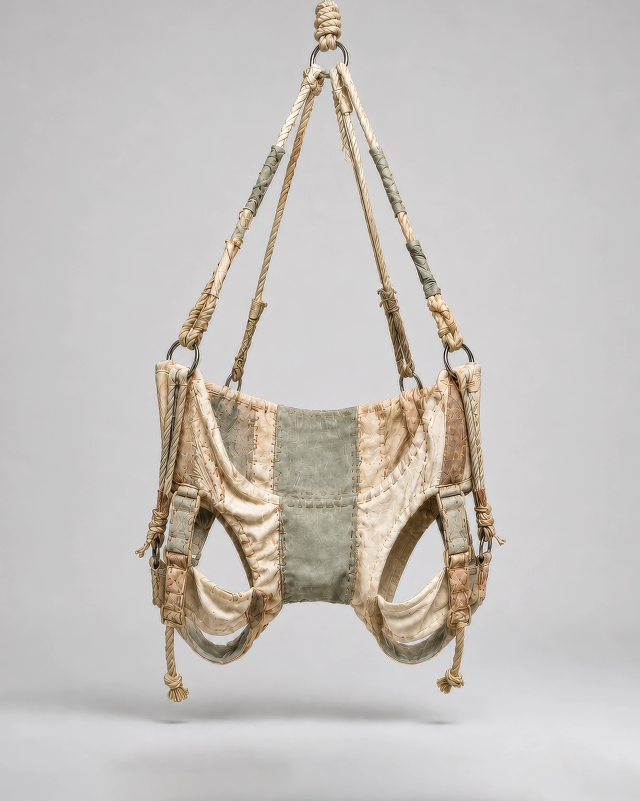

No.16 Variable Assistive Devices
Perching Harness, 2042
의자를 대체하기 위해 개발된 신체 가변 보조 기구이다. 장치는 골반의 앞쪽과 좌골 일부만을 선택적으로 지지하여 사용자의 체중을 다리로 분산시키고, 완전히 앉지 않은 걸침 자세(perching posture)를 기본 자세로 유도한다. 기존의 착석 자세를 최소 면적의 생활 자세로 전환함으로써 의자가 차지하던 공간을 제거한다.
- 크기/무게
- W: 68, H: 105(cm) / 4.2(kg)
- 재질
- 면 캔버스, 폴리에스터 충전재, 면 로프, 가죽 보강재, 스테인리스 스틸 링
- 사용 목적
- 의자가 차지하는 바닥 면적을 제거
- 유도 자세
-
골반 전방 회전
좌골 일부만 지지
무릎 약 20~30° 굴곡
체중의 대부분을 다리에 분산
반착좌(Perching) 자세 유지 - 추정 환경
- 5평 이하의 원룸
- 추정 사용
- 장치를 허리에 착용한 뒤 골반 앞쪽만을 지지한 상태로 생활했던 것으로 추정된다. 체중은 대부분 다리에 분산되었으며, 식사·작업·대기 등 일상적인 활동을 완전히 앉지 않은 자세에서 수행했던 것으로 보인다.
* 이미지에 마우스를 올려보세요.